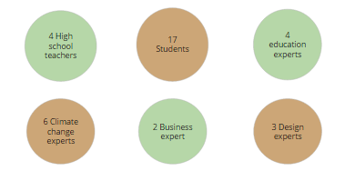
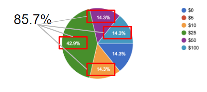
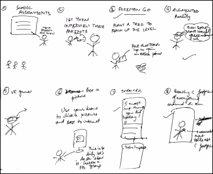
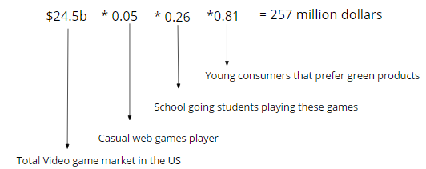
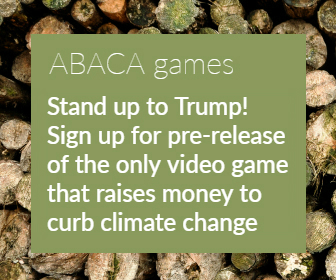
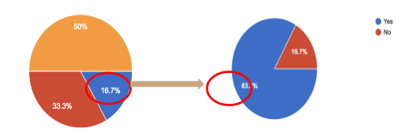
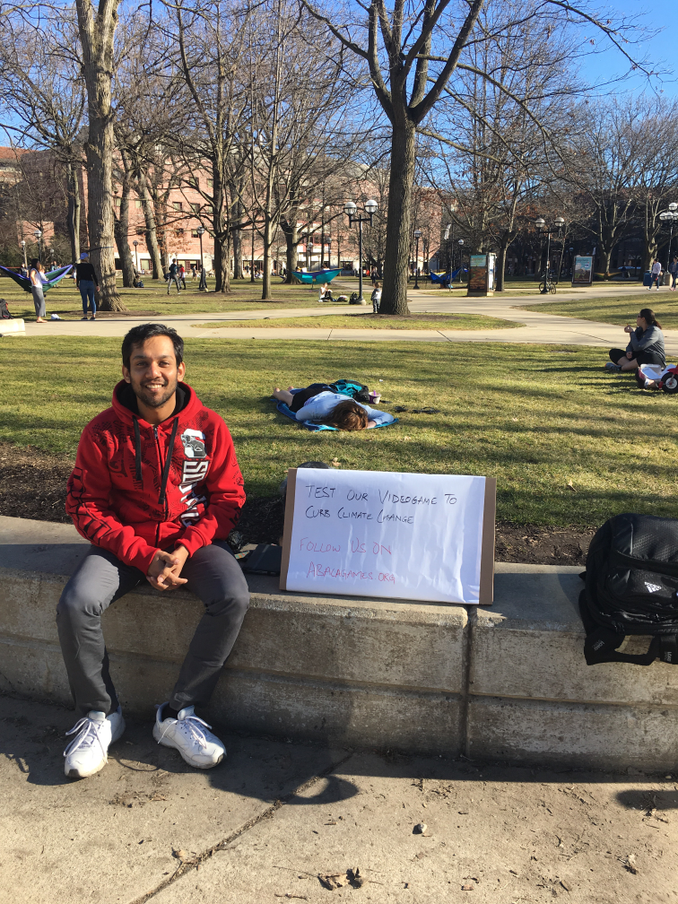

DESIGN THINKING WITH AN ENTREPRENEURIAL MINDSET - ABACA GAMES: IMPACT VIDEO GAME VENTURE
Role -
Principal UI designer
Overview


Designed a role playing video game to make high school students take action to curb climate change
in a virtual environment.
Initial Problem statement
Develop a videogame to mitigate climate change.
Stakeholder interviews:
Talked to a number of people in order define the problem in a better way.

We talked to 36 stakeholders (which kept on adding during the process) and gathered data through them and came up with 4 major key takeaways.
a. A game could really help teachers and environment if it is able to teach the students about climate change.
b. Only privileged students have the luxury to care about climate change. Disadvantaged groups generally have bigger problems to worry about.
c. Key audience is a high school student who care but not know what to do. His mind is still malleable.
d. High school students believe that climate change is a debate.
e. Teachers are willing to assign climate change videogame as an extra credit or homework.
Surveys
The survey was meant to analyse the awareness of high school students about climate change,
their excitement level for a game related to climate change and if they would be willing to pay for it.
Survey Results
Many high school students said that they know climate change is an issue but it is not highlighted enough. They were not really sure what
they can do in regards to the same.
Approximately, 86% people mentioned that they would be willing to spend $5-$100 to play a game or for in-game purchases if
revenue went to environmental charity.

Secondary research
We looked at 4 other popular games directly/indirectly related to climate change – Eco, climate change,
Fate of the world and Sim City 5. We found that none of them focuses specifically on climate change, donates revenues towards
climate change or allows teachers to use it as an evaluation tool.
From our research we found out about a psychological theory called self-determined theory.
It says to make students learn something new, any task should contain 4 major things:
1. Competence - We can succeed at a task, and that we are making progress towards that success.
2. Autonomy - We also need to feel that the choices we make matter, and that we have meaningful options.
3. Relatedness - We need to feel that our efforts are recognized by others, and that we are part of something larger than ourselves.
4. Risk-taking - Try anything and have no risk of failure
On running our concept through one of the educational experts, he mentioned that he loves the creative part of tricking kids into learning.
Problem statement
How might we make high school students do something about climate change in a feasible way. (Process in short:
Empathy Map -> Grouping -> Research -> How can we)
We created an empathy map to find out the pain and gain points of high school students who would be
somewhat interested in climate change.
From the empathy map, we grouped the pain points into some common themes.
1. Behaviour
2. Effectiveness
3. Action items
4. Seriousness
We decided to follow the path of action items and thus came up with a “how might we?”
Then we sketched out a few solutions.

Parellel research
From our research we found out that the total casual games market in US played by green consumers is $257m.

In order to test out the interest level of people towards this idea, we put out a google adword along with a
survey and it got 80,000 impressions and 300 clicks and for the survey we got 166 responses.

Solution
Role Playing Game that makes high school students take action to curb climate change in a virtual environment.
Play the prototype
Business model
From the survey we found that 67% more high schoolers were willing to spend money on video games
or in-app purchases if the money went to an environmental charity.
Below image shows how the results change when the users know that their money is going to an
environmental charity.

The major part of revenue would be from ads in the game and in-app purchases. We also looked at different promotional channels
to promote our game like high school teachers and University of Michigan MOOC on climate action
Did it work?
We tested the prototype with random people at the University of Michigan, Central campus.
We also went to a high school- Star International Academy in Dearborn Heights, to test it out with high school students.
The concept garnered positive reviews and was seen as a way good way of making people learn about climate change

Learnings from the process:
1. In a game, it is very important to educate the user about the concept and thus adopt a low floor and high ceiling approach.
2. It is very important to get the feedback of the target user; while all other people come in the end.